πclass — o principal pilar do seu aprendizado


Características e propriedades específicas de cada figura geométrica plana, precisa ter conhecimento do que se refere a todo paralelogramo possuir lados opostos congruentes e fórmulas de área e perímetro.
Um triângulo é um polígono de três lados, três vértices e três ângulos. Normalmente os vértices são representados por letras maiúsculas do nosso alfabeto, e a medida dos lados é representada por letras minúsculas. Já os ângulos são representados por letras do alfabeto grego.
Existem elementos e propriedades comuns a todos os triângulos, que são:
A: área b: base h: altura
Existem duas formas de classificar os triângulos, que são independentes entre si. Uma delas leva em consideração os ângulos – nesse caso, um triângulo pode ser obtusângulo, acutângulo ou retângulo. Já a outra maneira de classificar faz a comparação entre o comprimento de cada um dos lados, com isso um triângulo pode ser escaleno, equilátero ou isósceles.
- Classificação de triângulos quanto aos ângulos
Ao analisar os ângulos internos do triângulo, chegamos a três casos:
1. Triângulo acutângulo: Um triângulo é conhecido como acutângulo quando os seus três ângulos são agudos, ou seja, menores que 90º.

2. Triângulo retângulo: Um triângulo é retângulo quando um de seus ângulos é reto, ou seja, igual a 90º. Como a soma dos três ângulos é sempre igual a 180º, os demais ângulos são necessariamente agudos.
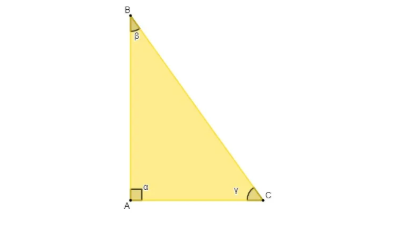O triângulo retângulo é muito importante para a Matemática, pois, com base nele, são desenvolvidas relações de grande importância, como as relações trigonométricas no triângulo retângulo e o teorema de Pitágoras. Para saber mais informações sobre esse tipo de triângulo, acesse o nosso texto: triângulo retângulo.
3. Triângulo obtusângulo: Um triângulo é obtusângulo quando um de seus ângulos é obtuso, ou seja, maior que 90º. Os demais ângulos são necessariamente agudos.

- Classificação quanto ao lado
Analisando os lados do triângulo, podemos também separar três casos:
1. Triângulo escaleno: O triângulo é escaleno quando as medidas dos lados são todas diferentes.
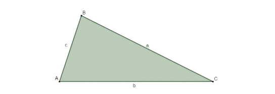1. Triângulo isósceles: O triângulo é isósceles quando possui pelo menos dois lados congruentes, ou seja, com a mesma medida. Devido a essa particularidade, o triângulo isósceles possui propriedades específicas, que não são válidas para triângulos escalenos.

As propriedades específicas do triângulo isósceles são duas, uma em relação ao ângulo e outra em relação à altura.
- Em triângulos isósceles, os ângulos da base são sempre iguais (tratamos como base o lado que possui medida diferente dos demais lados).

- Ao traçar a altura h do triângulo isósceles, ela divide a base em duas partes iguais.

Note que os segmentos AM e BM são congruentes, o que significa que M é o ponto médio da base desse triângulo.
- Triângulo equilátero: O triângulo é equilátero quando possui os três lados com as mesmas medidas. Como consequência, os três ângulos também possuem a mesma medida, que é de 60º. Existem fórmulas específicas para o cálculo de área e de altura desse triângulo, a s quais são deduzidas a partir dos três lados congruentes.
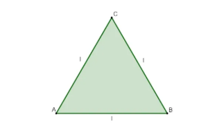No triângulo equilátero, as propriedades do triângulo isósceles também são válidas, afinal, ele possui mais de dois lados iguais. Além disso, conhecendo o lado do triângulo equilátero, podemos encontrar a altura e a sua área pelas fórmulas a seguir:
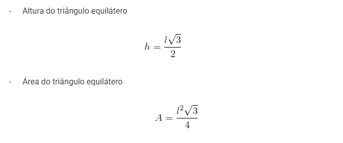- Polígonos com quatro lados são quadriláteros.
- Os três elementos básicos que constituem os quadriláteros são os lados, os vértices e os ângulos internos.
No quadrilátero ABCD, temos que

Um polígono é uma região do plano formada pela união de uma linha fechada – que, por sua vez, é formada por segmentos de reta chamados de lados – e todos os pontos interiores a essa linha.
São exemplos de polígonos os triângulos, os quadrados, os retângulos e os paralelogramos. Além deles, todas as figuras geométricas que seguem o padrão de construção desses exemplos também são polígonos, como é o caso dos pentágonos, hexágonos, heptágonos etc.

Não são polígonos, portanto, figuras que apresentam em um de seus lados, no lugar de um segmento de reta, uma curva qualquer ou que dois de seus lados cruzam-se.

Um polígono é convexo quando, dados dois pontos A e B quaisquer em seu interior, é impossível enconeiratrar um segmento de reta AB com pelo menos um ponto no exterior do polígono, ou seja, tomando dois pontos A e B dentro de um polígono, se o segmento AB sempre estiver intmente no interior do polígono, independentemente da localização dos pontos A e B, esse polígono será convexo.
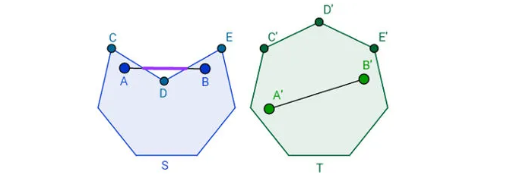C=2πr
O comprimento de uma circunferência é a medida do contorno dessa figura. Lembre-se de que uma circunferência é formada por um conjunto de pontos que possuem a mesma distância de determinado ponto, chamado de centro. Essa distância é chamada de raio, e o dobro do raio é chamado de diâmetro.
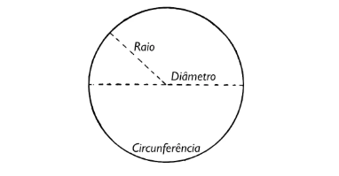Importante: Alguns textos se referem ao comprimento da circunferência como perímetro do círculo, pois o contorno (ou borda) de um círculo de raio r é uma circunferência de raio r.
Para calcular o comprimento C de uma circunferência de raio r, utilizamos a seguinte fórmula:
C=2πr
Alguns textos apresentam essa expressão na forma C=dπ, em que d é o diâmetro da circunferência. Perceba que podemos escrever C=2πr como C=2rπ, ou seja, C=dπ
Importante: O comprimento de uma circunferência deve ser expresso na mesma unidade de medida que o raio dessa circunferência.
Exemplo:Qual o comprimento de uma circunferência com 4 cm de raio? (Considere π = 3)
Resolução:Resolução:Aplicando a fórmula para r = 4 cm e realizando a aproximação indicada para o valor de π, temos que
C= 2πr = 2⋅3⋅4 = 24 cm
Existem alguns conteúdos da geometria plana que convém serem estudados em uma segunda etapa. Depois de conhecer as definições, características e propriedades básicas dos triângulos em uma etapa de aprofundamento dos conhecimentos, é bom focar em seguida no estudo dessas figuras porque elas possuem uma grande quantidade de propriedades.
Sobre os triângulos existem os seguintes conhecimentos:
O teorema de Pitágoras é uma relação entre as medidas dos lados de um triângulo retângulo. De acordo com esse teorema, o quadrado da medida da hipotenusa é igual à soma dos quadrados das medidas dos catetos. Ou seja, se os catetos medem a e b e a hipotenusa mede c, então c^2=a^2+b^2.
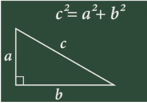Utilizamos o teorema de Pitágoras em diversos estudos geométricos, inclusive para provar outros teoremas matemáticos. Neste texto, porém, vamos nos concentrar em sua aplicação mais direta, que é determinar um dos lados de um triângulo retângulo por meio dos outros dois.
Exemplo:Determine o valor de x no triângulo retângulo abaixo.

Perceba que x é a medida da hipotenusa. Assim, pelo teorema de Pitágoras:
x^2=6^2+8^2
x=10 cm
As razões trigonométricas são as relações existentes entre os lados de um triângulo retângulo. As principais são o seno, o cosseno e a tangente.
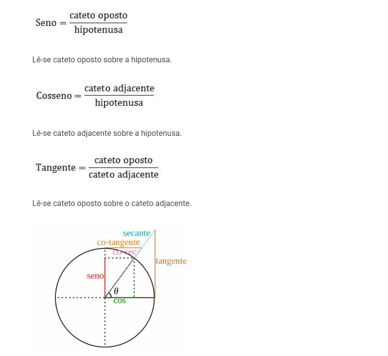Como nos triângulos semelhantes os lados homólogos são proporcionais, o resultado da divisão desses lados será um valor constante. Esse valor é chamado de razão de proporcionalidade.
Considere os triângulos ABC e EFG semelhantes, representados na figura abaixo:
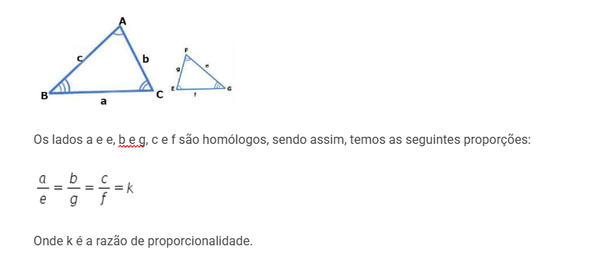Para identificar se dois triângulos são semelhantes, basta verificar alguns elementos.
1º Caso: Dois triângulos são semelhantes se dois ângulos de um são congruentes a dois do outro. Critério AA (Ângulo, Ângulo).
2º Caso: Dois triângulos são semelhantes se os três lados de um são proporcionais aos três lados do outro. Critério LLL (Lado, Lado, Lado).
3º Caso: Dois triângulos são semelhantes se possuem um ângulo congruente compreendido entre lados proporcionais. Critério LAL (Lado, Ângulo, Lado).
Sabemos que os elementos básicos de um triângulo são: os vértices, os lados e os ângulos, mas não são os únicos. Em um triângulo identificamos outros elementos, como mediana, bissetriz e altura.
Vértices, lados e ângulos.
 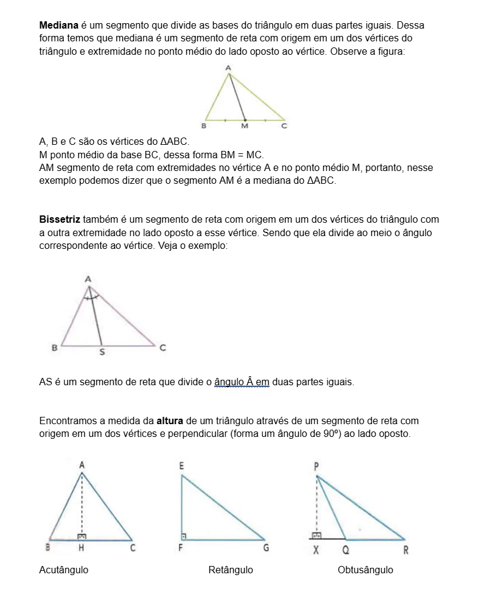
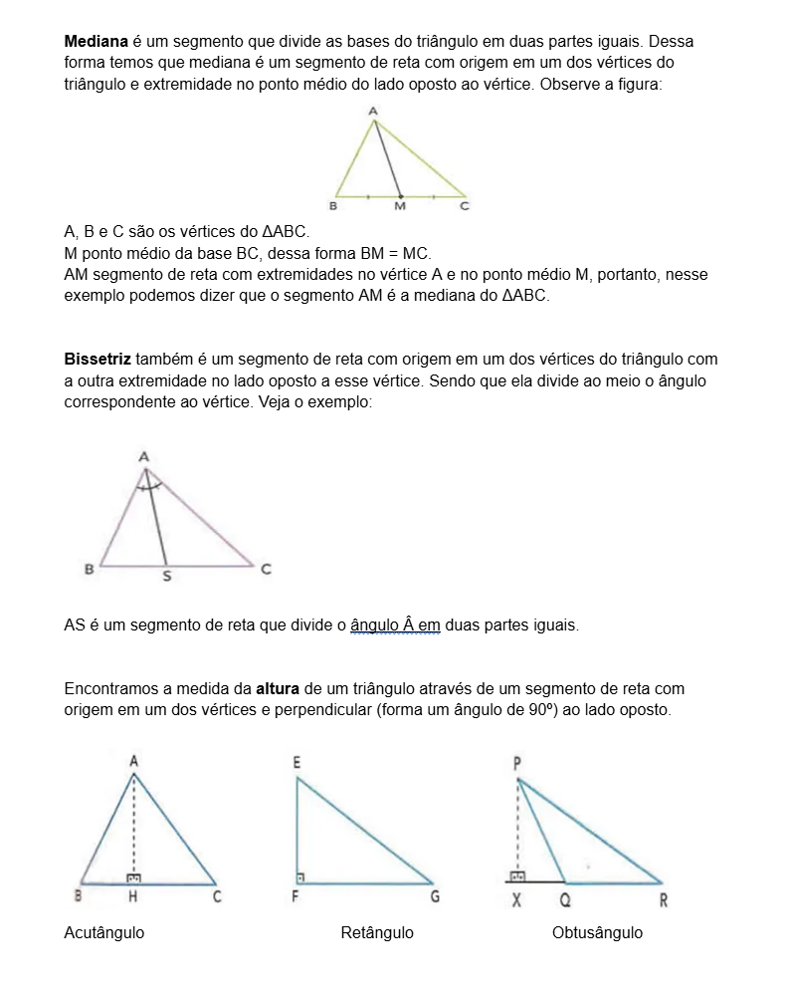
Seleção de videoaulas sobre esse assunto com ótimos professores que os ofertam gratuitamente na internet:
1. (Enem 2017) Um fabricante recomenda que, para cada m² do ambiente a ser climatizado, são necessários 800 BTUh, desde que haja até duas pessoas no ambiente. A esse número devem ser acrescentados 600 BTUh para cada pessoa a mais, e também para cada aparelho eletrônico emissor de calor no ambiente. A seguir, encontram-se as cinco opções de aparelhos desse fabricante e suas respectivas capacidades térmicas:
O supervisor de um laboratório precisa comprar um aparelho para climatizar o ambiente. Nele ficarão duas pessoas mais uma centrífuga que emite calor. O laboratório tem forma de trapézio retângulo, com as medidas apresentadas na figura.
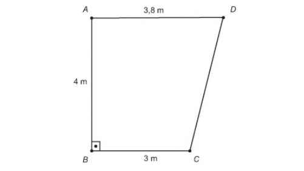Para economizar energia, o supervisor deverá escolher o aparelho de menor capacidade térmica que atenda às necessidades do laboratório e às recomendações do fabricante.
A escolha do supervisor recairá sobre o aparelho do tipo
a) I.2. (Enem 2016) Um senhor, pai de dois filhos, deseja comprar dois terrenos, com áreas de mesma medida, um para cada filho. Um dos terrenos visitados já está demarcado e, embora não tenha um formato convencional (como se observa na Figura B), agradou ao filho mais velho e, por isso, foi comprado. O filho mais novo possui um projeto arquitetônico de uma casa que quer construir, mas, para isso, precisa de um terreno na forma retangular (como mostrado na Figura A) cujo comprimento seja 7 m maior do que a largura.

Para satisfazer o filho mais novo, esse senhor precisa encontrar um terreno retangular cujas medidas, em metro, do comprimento e da largura sejam iguais, respectivamente, a
A) 7,5 e 14,5.3. (Enem 2018) Um brinquedo chamado pula-pula, quando visto de cima, consiste de uma cama elástica com contorno em formato de um hexágono regular.
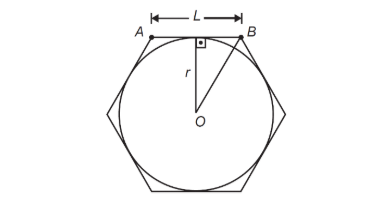Se a área do círculo inscrito no hexágono é 3π metros quadrados, então a área do hexágono, em metro quadrado, é:
A) 9Primeiro calcularemos a área do ambiente, que é um trapézio de base maior medindo 3,8 metros, base menor medindo 3 metros e altura de 4 metros. A fórmula a seguir é utilizada para calcular a área de um trapézio.

Para cada m², são recomendados 800 BTUh, logo, serão 13,6 · 800 = 10.880 BTUh para climatizar o ambiente. Além disso, especifica-se que, no caso de objetos que transmitem calor, é necessário acrescentar 600 BTUh. No caso, há uma centrífuga nesse ambiente, então, somaremos:
10.880 + 600 = 11.480 BTUh
Nesse caso, o supervisor escolherá o aparelho III.
2. letra BPrimeiro calcularemos a área da figura B. Podemos dividir essa área em dois triângulos retângulos, o primeiro com base igual a 3 m e altura igual a 21 m e o segundo com base e altura iguais a 15 m, então, temos que:
A = (15 ⸳ 15) : 2 + (3 ⸳ 21) : 2 = 112,5 + 31,5 = 144
Por outro lado, sabemos que as áreas são as mesmas, então, temos que:
x (x + 7) = 144
Analisando os divisores de 144, temos que 9 ⸳ (9 + 7) = 9 ⸳ 16 = 144.
Nesse caso, temos que x = 9 e x + 7 = 16.
3. Letra BPrimeiro encontraremos o raio da circunferência que coincide com a altura do triângulo mostrado na imagem.
A = πr²
Sabemos que a área é igual a 3π:
3π = πr²
3 = r²
r = √3
Sabendo o valor do raio, se traçarmos o triângulo AOB, o raio será a sua altura. No hexágono, esse triângulo é sempre equilátero, então, utilizando a fórmula da altura de um triângulo equilátero, temos que:

Agora que conhecemos o comprimento do lado do hexágono, basta utilizar a fórmula da área do hexágono.
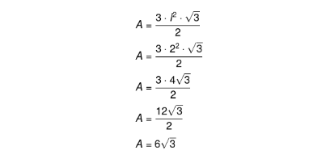